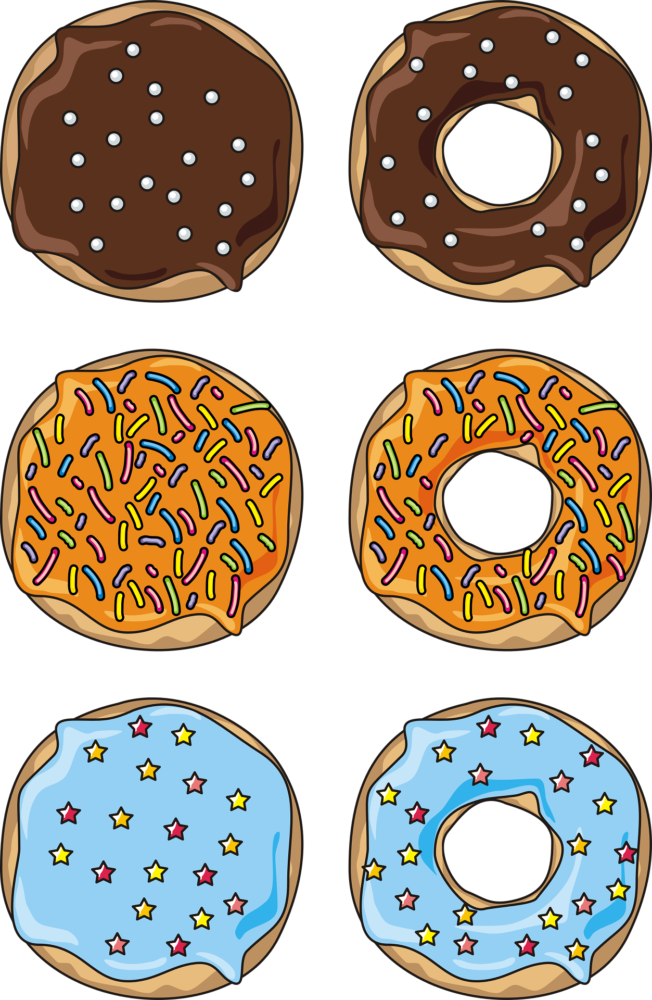

Donuts Recipe

Ingredients
For the donuts
- 18 g whole milk, lukewarm
- 2 1/2 teaspoon(s) yeast
- 50 g granulated sugar
- 2 egg yolks
- 1 teaspoon(s) syrup, vanilia
- 2 tablespoon(s) butter, melted
- orange zest, of 1 orange
- 330 g all-purpose flour
- 1/4 teaspoon(s) salt, coarse
- sunflower oil, for frying
To serve
- 160 g jam, of your choice
- 1 tablespoon(s) icing sugar
- truffle, colored
For the chocolate glaze
- 1 tablespoon(s) cocoa powder
- 2 tablespoon(s) icing sugar
- 1 tablespoon(s) whole milk
For the white glaze
- 2 tablespoon(s) icing sugar
- 1 tablespoon(s) whole milk
Steps
- In a large bowl, combine the milk, yeast and sugar.
- Mix until the yeast has completely dissolved and set aside for 10-15 minutes, until the mixture starts to froth.
- Add the egg yolks, melted butter and vanilla. Stir.
- Add the orange zest, salt and half of the flour. Stir.
- Add the remaining flour and stir with a spoon as thoroughly as possible.
- Transfer dough to another bowl that has been lightly brushed with oil. Dust with some flour and cover with plastic wrap.
- Set aside for 1-2 hours at room temperature so that it can rise.
- When ready, dust your hands with flour so that the dough doesn’t stick to them and shape dough in to a ball.
- Dust a working surface with flour and roll out the dough until it is 1cm thick. You can roll out the dough up to 3 times. Do not overwork it or else the donuts will not come out as light and fluffy as they should.
- Use a 10 cm round cookie cutter to cut out a donut and use a smaller one to cut out a small circle in the middle.
- Repeat the same process until you run out of dough. This recipe yields 8 donuts. (Reserve 2 small balls of dough so you can test if the oil is hot enough.
- Dust the donuts with some flour, cover with a towel and let them rest and rise again for 30 minutes.
- Heat the oil in a deep pan, (It should be about 5 cm deep) until it reaches 175*C (347*F). Test it with the small balls of dough you reserved.
- When the oil is ready, add the donuts to the pan and fry for 1-2 minutes on the first side. When golden, turn them over and fry for another 1-2 minutes.
- Remove from pan and transfer to a plate lined with paper towels. Allow them to drain from excess oil and cool for 5-10 minutes.
- Prepare the white glaze by combining the icing sugar, vanilla and milk in a small bowl.
- Prepare the chocolate glaze by combining the icing sugar, cocoa powder and milk in a small bowl. Add a little more milk if necessary.
- Decorate the donuts any way you like with the 2 glazes, jelly and sprinkles.